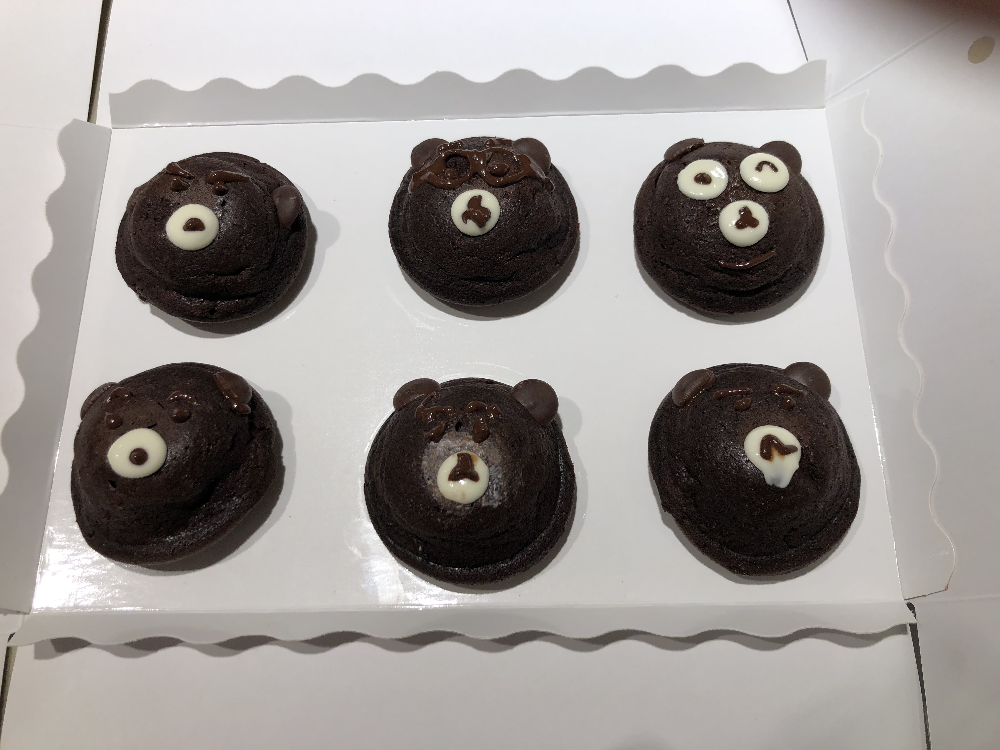
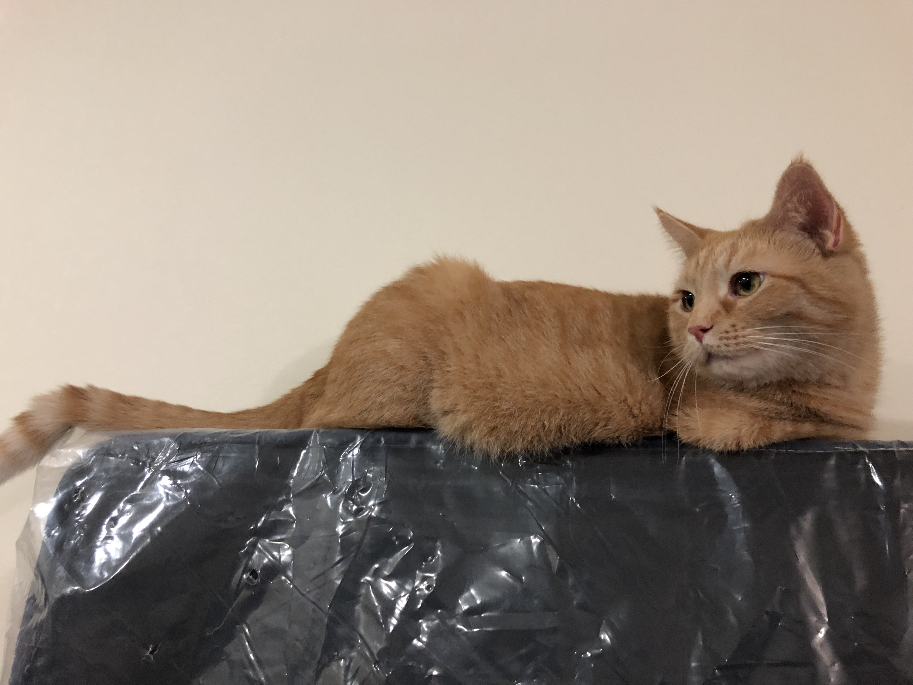
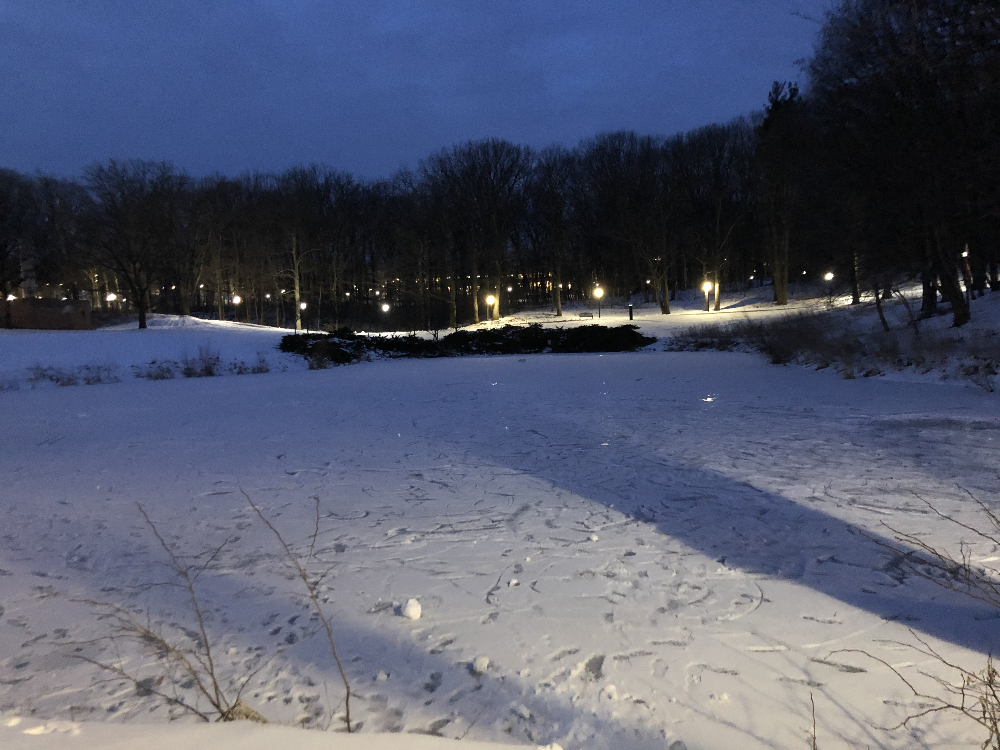
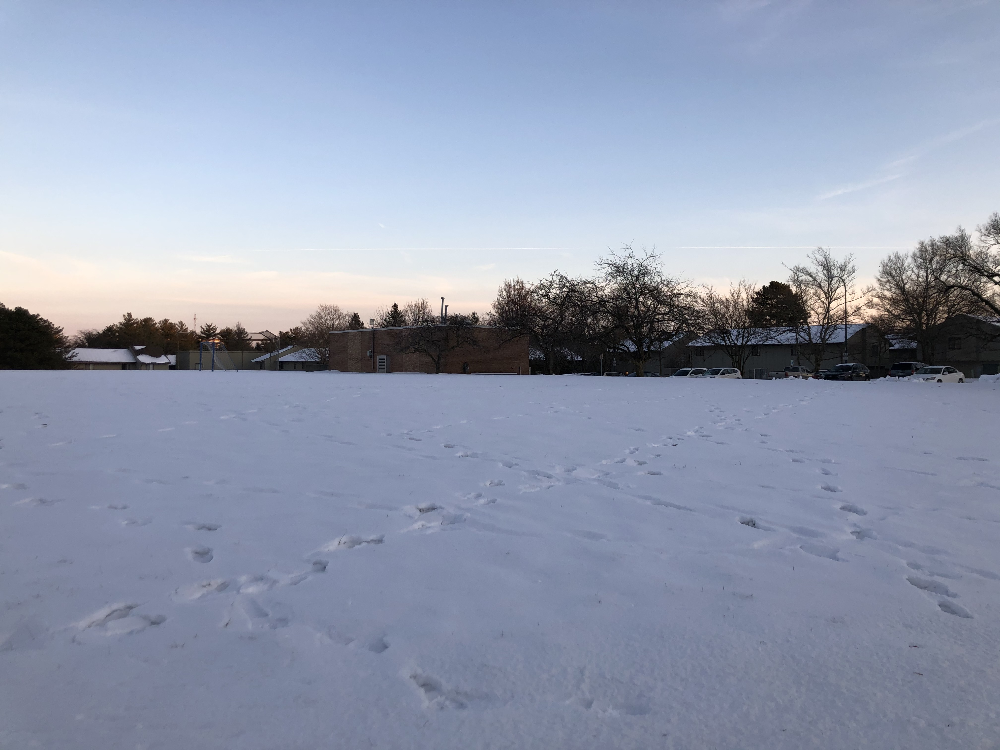
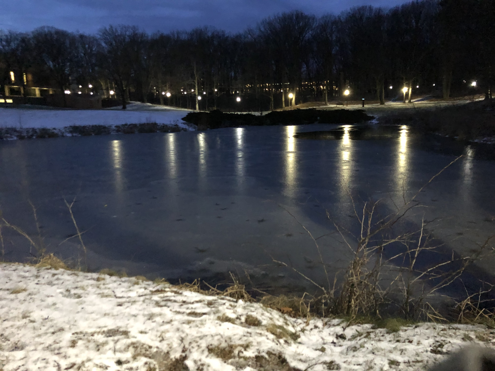
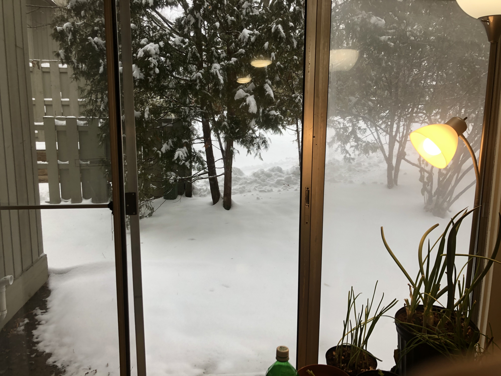
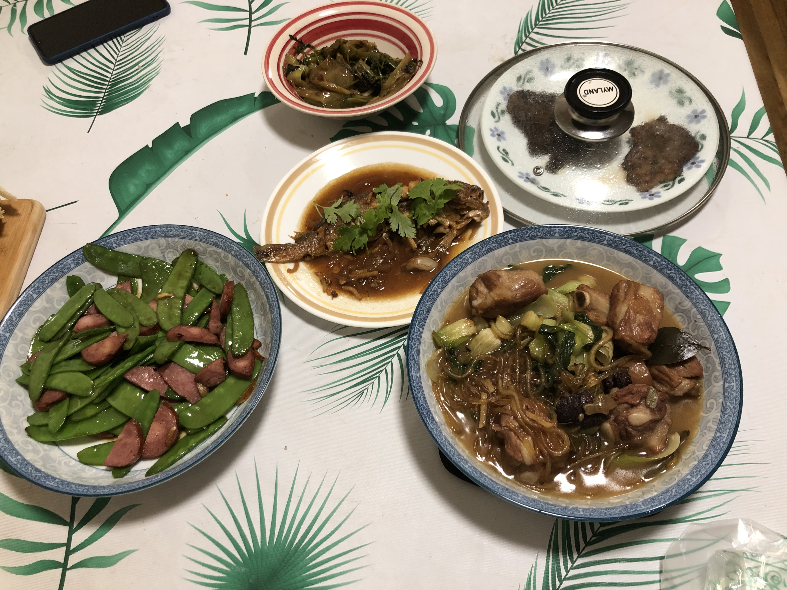

PHOTOGRAPHY
“Photography is the story I fail to put into words.”
Destin Sparks, landscape photographer based in Queensland, Australia
This is my first time living in a foreign country. Every day, I meet cool people and explore new opportunities. In order not to forget all these wonderful experiences in the future when I get old, I have been keeping a journal by taking pictures of adorable creatures, crazy weather in Ann Arbor, and delicious homemade Chinese dishes in NW IV.






